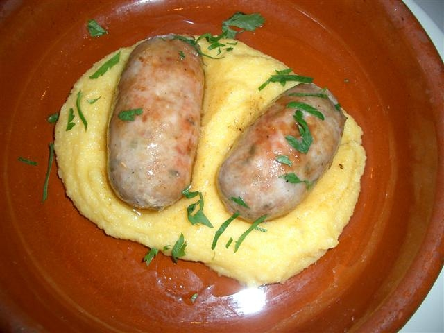

Herbed Polenta
 A basic polenta, made more flavorful with some simple herbs. Delicious with vegetables, sauce, or cheese.Ingredients:
- 4 cups water
- 1/2 cup milk
- 1 cup medium or fine cornmeal
- 3 tablespoons fresh herbs (sage or rosemary are good choices)
- Salt and black pepper to taste
- Bring the water and milk to just a boil.
- Whisk in the cornmeal and herbs, being sure to break up any lumps!
- Reduce heat to just a simmer, and cook for about 35 to 40 minutes, stirring frequently. You want to end up with something about the consistency of sour cream.
- Stir in salt and black pepper to taste! Serve with your favorite sauce.